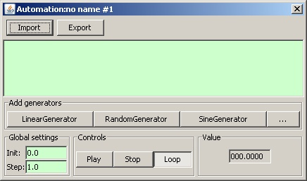
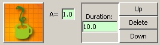

 The automation editor is made of the following elements:
The Init
field is a floating point value that specifies the
initial value of the automation.
The Step
is a value in seconds, which defines the duration
between two updates of the value generated by the automation. The smaller
the step is, the higher the refresh rate of the value.
The Loop
toggle button determines, when the automation ends,
if it should restarts automatically from the beginning.
A generator is added into the automation by clicking on the
appropriate button in the Add generators
panel. Each button
represents a class of generator.
The user can add his/her own custom generators by creating scripts.
Clicking on the ...
button will summon the Script Dialog.
The new generator is always added at the end of the list.
A generator looks like this:

Every generator contains an icon on the left, some buttons and settings
on the right. It may contain additional settings in the middle (the
editable value of A
in the abova example), which are specific to
each type of generator.
Each generator is executed for a determined amount of time, called
duration
, and then the automation goes on with the next
generator in the list. The duration is configured by typing the
desired number of seconds (decimal values are supported, but check
that the Step
value of the automation has sufficient granularity)
in the Duration
input box of each generator in the list.
The generators are executed one after the other, starting from the top of the list and finishing at the bottom.
The order of execution of the generators can be changed by swapping them,
using the Up
and Down
buttons. Clicking on Up
will swap the current generator with the one directly above.
Clinking on Down
will swap the current generator with the one
directly below.
Clicking on the Delete
button will remove a generator from
the current automation.
An automation can be started by clicking on the
Play
button. Then it can be paused by clicking on the Pause
button, and resumed by clicking on the Play
button again.
The automation will stop on its own when the last generator is ended
(unless the Loop
option enabled). But it can be stopped at any
time by clicking on the Stop
button
When an automation starts, it executes each generator one by one
during the specified amount of time. When the execution of the last
generator is finished, the automation ends, and the generated value is
no more updated, unless the Loop
option is enabled.
If the Loop
option is enabled, then the execution of the
automation continues infinitely by restarting the whole generators sequence.
Loopis enabled by default.
Check the following pages for a description of the built-in generators:
Check this page to learn how to associate an automation to registers/coils.